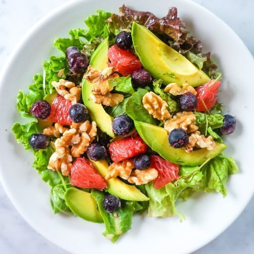
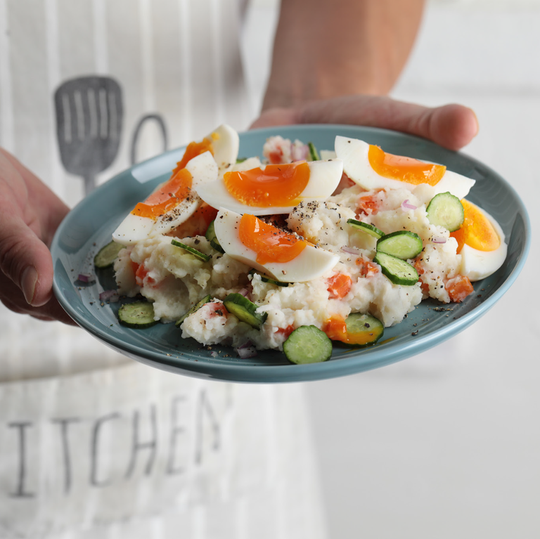
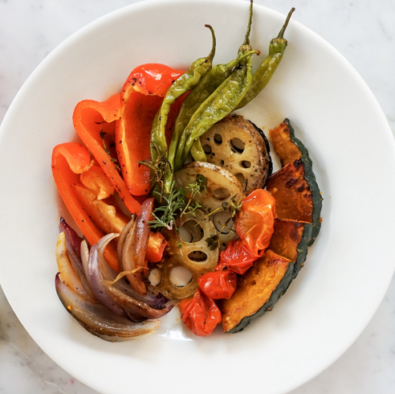

酪梨水果沙拉
酪梨沙拉要加什麼才好吃，其實手邊唾手可得的水果、蔬菜及堅果就是非常好的選項！日本的甩油教官AYUMI與星座專業人士一起分析十二星座的個性，分別推薦最適合他們的食譜，透過這些料理，傳授大家美麗的生活方式。一起往下看由AYUMI開發、符合每個星座特徵和趨勢的充電菜單！

馬鈴薯溏心蛋沙拉
你也以為馬鈴薯也是高熱量又容易發胖的澱粉嗎？其實馬鈴薯冷卻後，會產生「抗性澱粉」，是很好的低GI食物喔！連營養師都很推薦的「馬鈴薯溏心蛋沙拉」，以後可以放心吃啦～

烤蔬菜溫沙拉
溫沙拉可以是全熟的菜組合而成，也可以是有生有熟（像是生菜配烤雞肉），重點是在涼涼的沙拉中加入一些熱度，整體不會那麼冷～這次日本健康教練AYUMI要介紹的是「烤蔬菜溫沙拉」，用全熟的烤蔬菜組合而成，可以選擇你自己喜歡的蔬菜來製作，烤出來溫溫熱熱又非常健康，吃起來會很滿足！